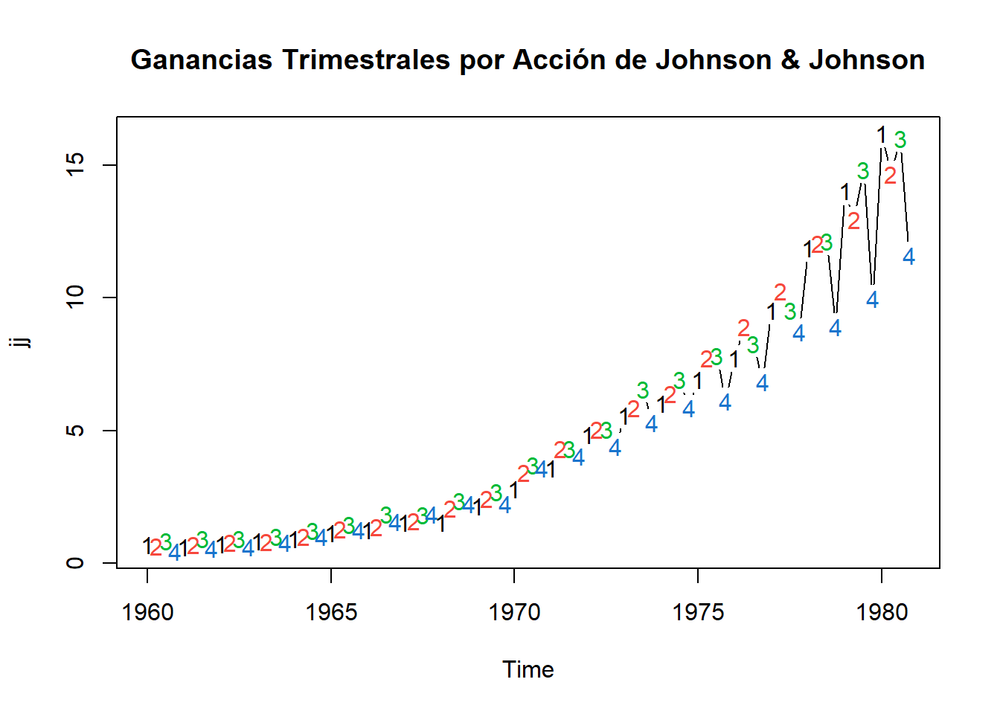
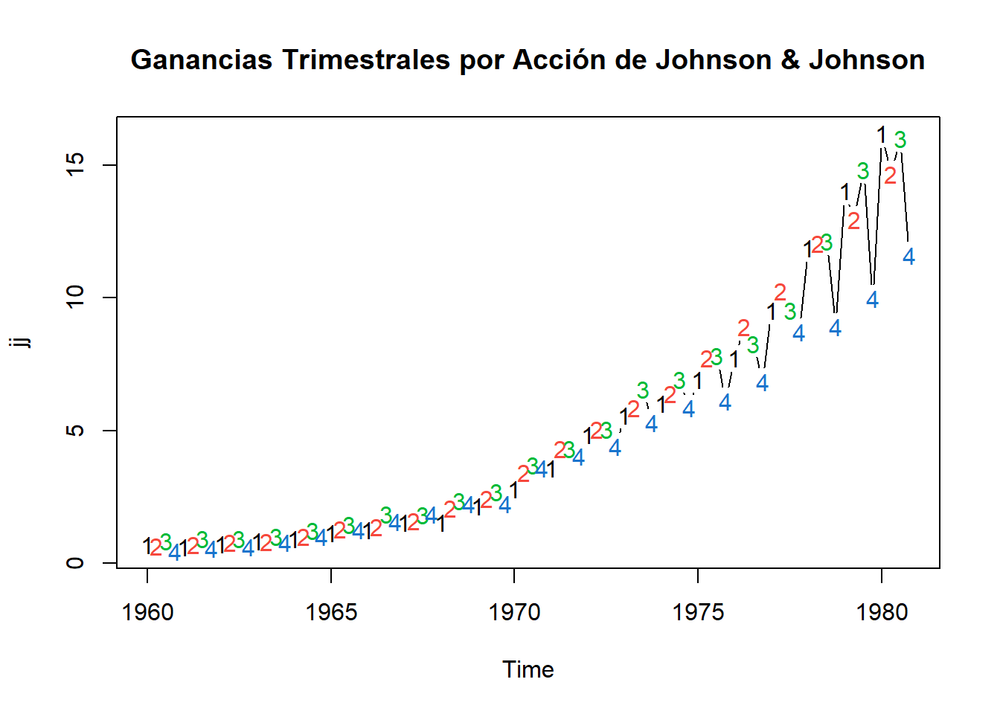
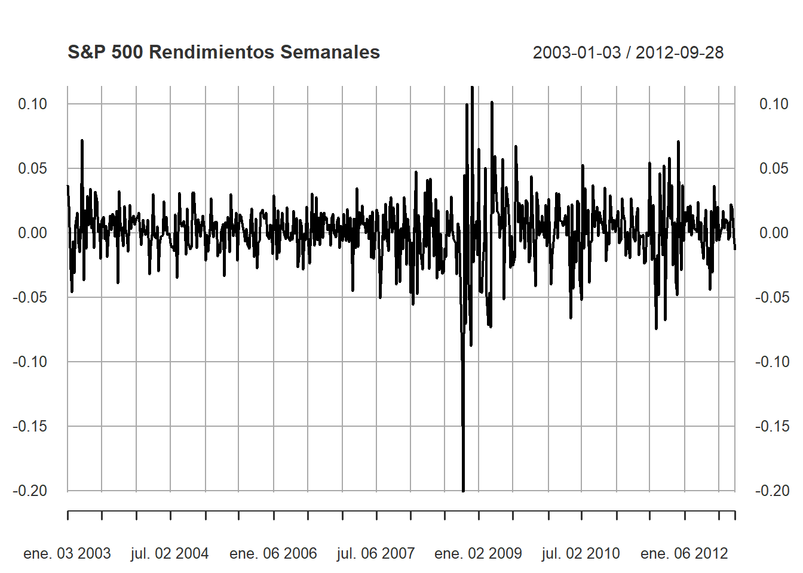

library(astsa)
plot(jj, main = "Ganancias Trimestrales por Acción de Johnson & Johnson",type = "c")
text(jj, labels = 1:4, col = 1:4)
Juan Isaula
May 14, 2021
Una serie temporal es una colección de observaciones indexadas por la fecha de cada observación, denotada por \(y_t\)
\[ \{y_1, y_2, . . . . , y_T\} \]
En la práctica se asume que lo anterior es sólo una muestra, pero que la serie pudo haber sido observada en más periodos.
\[ \{y_t\}_{t = -\infty}^\infty = \{. . . , y_{-1}, y_0, y_1, y_2, . . . , y_T,y_{T+1},y_{T+2}, . . .\} \]
En el análisis de series temporales el objetivo es extraer parámetros relevantes o características de ellas. Estas características pueden ser luego utilizadas para generar un modelo matemático que describa la serie y pueda ser utilizado para realizar predicciones.
De acuerdo a la cantidad de variables variables o características que la serie temporal contenga se considera univariada para el caso de una variable, o multivariada para el caso de multiples variables. De esta fundamental característica depende los pasos a seguir para su análisis y prediccón.
Un paquete que utilizaremos mucho durante este post es astsa, que significa Análisis de series de tiempo estadístico aplicado.
Ahora, para comenzar, exploremos la naturaleza de los datos de series de tiempo. Aquí tenemos la serie de ganancias trimestrales por acción de Johnson & Johnson.
library(astsa)
plot(jj, main = "Ganancias Trimestrales por Acción de Johnson & Johnson",type = "c")
text(jj, labels = 1:4, col = 1:4)
Tiene algunas características comunes de los datos de series de tiempo, tendencia al alza, estacionalidad en el sentido de que el seguendo y el tercer trimestre suelen subir, mientras que el cuarto trimestre suele bajar. Además existe heterosticidad porque, a medida que crece el valor del activo, los pequeños cambios porcentuales se convierten en grandes cambios absolutos.
Muy bien previamente mencionamos dos palabras importantes en el análisis de series temporales, las cuales son heterosticidad y estacionariedad, antes de continuar definiremos esta terminología:
La base del análisis de series de tiempo es la estacionariedad. Se dice que una serie de tiempo \(\{y_t\}\) es estrictamente estacionaria si la distribución conjunta \((y_{t_1}, . . . , y_{t_k})\) es idéntica a la de \((y_{t_1+t}, . . . , y_{t_k+t})\), para todo \(t\), donde \(k\) es un entero positivo arbitrario y \((t_1, . . . , t_k)\) es una colección de \(k\) enteros positivos. En otras palabras la estacionariedad estricta requiere que la distribución conjunta de \((y_{t_1}, . . . , y_{t_k})\) sea invariante bajo el cambio de tiempo. Esta es una condición muy fuere que es dificil de verificar empíricamente. A menudo se asume una versión más débil de la estacionariedad. Una serie de tiempo \(\{y_t\}\) es debilmente estacionaria si tanto la media de \(y_t\) como la varianza entre \(y_t\) y \(y_{t-\ell}\) son invariantes en el tiempo, donde \(\ell\) es un número entero arbitrario. Más específicamente \(\{y_t\}\) es débilmente estacionaria si:
\[ \begin{eqnarray} E(y_t) &=& \mu\\[0.2cm] Cov(y_t, y_{t-\ell}) &=& \gamma_t \end{eqnarray} \]
La covarianza \(\gamma_t\) se llama autocovarianza lag(rezago)-\(\ell\) de \(y_t\). Tiene dos propiedades importantes:
La segunda propiedad se mantiene, ya que
\[ Cov(y_t, y_{t - (-\ell)}) = Cov(y_{t-(-\ell)},y_t) = Cov(y_{t+\ell},y_t) = Cov(y_{t_1},y_{t_1-1}) \]
donde \(t_1 = t + \ell\).
Observación: Supongamos que \(y_t \sim N(\mu_t, \sigma_t^2)\), decimos que es estacionario si \(\mu_t\) y \(\sigma_t^2\) son constantes, entonces:
No estacionaria si \(\mu_t\) está cambiado con el tiempo.
No estacionaria si \(\sigma_t^2\) está cambiando con el tiempo.
En las aplicaciones, la estacionariedad débil le permite a uno hacer inferencias con respecto a observaciones futuras.
En estadística se dice que un modelo de regresión presenta heterocedasticidad cuando la varianza de los errores no es constante en todas las observaciones realizadas.
Existen diferentes razones o situaciones en las que cabe encontrarse con perturbaciones heteroscedásticas. La situación más frecuente es en el análisis de datos de corte transversal, ya que los individuos o empresas o unidades económicas no suelen tener un comportamiento homogéneo.
Otra situación en la que se presenta hereroscedasticidad es en muestras cuyos datos son valores que se han obtenido agregando o promediando datos individuales.
Con esto en mente, veamos nuestra segunda seria, la cual presenta las desviaciones anuales de temperatura global. Los datos son desviaciones de la temperatura promedio entre 1960 y 1980. Notará que los datos tienen una tendencia generalmente positiva, pero la tendencia no siempre es positiva. A diferencia de los datos de Johnson y Johnson, esta serie no tiene un componente estacional y es homocedástica
La tercera serie son los rendimientos semanales del S&P 500. El S&P 500 es un índice bursátil estadounidense basado en 500 grandes corporaciones. Los rendimientos son el cambio porcentual por periodos de tiempo. A diferencia de las otras series, esta no tiene ninguna tendencia o estacionalidad. De hecho, parece que no hay ningún patrón en la serie (excepto que, de vez en cuando, la variación es grande). Este es un ejemplo de un tipo particular de proceso llamado ruido blanco.
Cuando se estiman modelos de series de tiempo, es importante evaluar si los residuos de la estimación correspoonden a un ruido blanco.
Sea \(\epsilon_t\) una sucesión cuyos elementos tiene media cero y varianza \(\sigma^2\)
\[ \begin{eqnarray} E(\epsilon_t) &=& 0\hspace{2.5cm} (media\hspace{0.1cm}cero)\\[0.2cm] E(\epsilon_t^2) &=& \sigma^2 \hspace{2.3cm} (varianza\hspace{0.1cm} constante)\\[0.2cm] E(\epsilon_t\epsilon_\tau) &=& 0\hspace{0.2cm}para\hspace{0.1cm} t\neq \tau\hspace{0.4cm}(terminos\hspace{0.1cm}no\hspace{0.1cm}correlacionados) \end{eqnarray} \]
Si los términos están normalmente distribuidos, es decir:
\[ \epsilon_t \sim N(0,\sigma^2) \]
entonces diremos que \(\epsilon_t\) es ruido blanco gaussiano. Una forma de evaluar si los residuos son ruido blanco es determinar si las autocorrelaciones
\[ \rho_1 = \rho_2 = . . . = \rho_\tau = 0 \]
para todo \(\tau\geq 1\).
¿Es esta serie un caso de ruido blanco?
\[ H_0: \rho_1 = \rho_2 = . . . = \rho_m = 0\hspace{0.5cm} \fbox{si es ruido blanco} \]
\[ Q^* = T\sum_{j = 1}^m \hat{\rho}^2\sim \chi_{m-k}^2 \]
Si \(Q^* > \chi_{m-k}(1-\alpha)\), rechazar \(H_0\) con \(100\alpha\%\) de significancia: la serie no es ruido blanco.
La intuición es que si la serie no es ruido blanco, algunos \(\hat{\rho}_j\) serán muy grandes, y entonces \(Q^*\) también lo será.
¿Es esta serie un caso de ruido blanco?
\[ H_0: \rho_1 = \rho_2 = . . . = \rho_m = 0\hspace{0.5cm} \fbox{si es ruido blanco} \]
\[ Q = T(T+2)\sum_{j=1}^m \frac{\hat{\rho}_j^2}{T - j}\sim \chi_{m-k}^2 \]
Si \(Q > \chi_{m-k}(1-\alpha)\), rechazar \(H_0\) con \(100\alpha\%\) de significancia: la serie no es ruido blanco. Este test es similar al de Box-Pierce, peero ajustada para muestras pequeñas.
Warning: package 'xts' was built under R version 4.2.3Loading required package: zooWarning: package 'zoo' was built under R version 4.2.3
Attaching package: 'zoo'The following objects are masked from 'package:base':
as.Date, as.Date.numeric
En este modelo, influye los rezagos previos (es decir, observaciones pasadas). Consideremos el ruido blanco \(\epsilon_t\). El modelo \(AR(P)\) es:
\[ y_t = c + \phi y_{t-1} + . . . + \phi_p y_{t-p} + \epsilon_t \]
Note que la ecuación previa la podemos escribir como:
\[ \begin{eqnarray} y_t - \phi_1 y_{t-1} - . . . - \phi_p y_{t-p} &=& c + \epsilon_t\\[0.2cm] \underbrace{(1 + \phi_1 L^1 - . . . - \phi_p L^p)}_{\Phi(L)} &=& c + \epsilon_t \end{eqnarray} \]
El proceso \(AR(p)\) es una ecuación en diferencia de orden \(p\). Esta ecuación es estable si y solo si las raíces del polinomio \(1 - \phi_1 z^1 - . . . - \phi_p z^p\) están todas fuera del círculo unitario.
Si el proceso es estable, resolvemos para \(y_t\),
\[ \begin{eqnarray} y_t &=& \Phi^{-1}(L)(c+\epsilon_t)\\[0.2cm] &=& \Phi^{-1}(1)c + \Phi^{-1}(L)\epsilon_t\\[0.2cm] &=& \frac{c}{1 - \phi_1 - . . . - \phi_p} + \Phi^{-1}(L)\epsilon_t \end{eqnarray} \]
Su valor esperado es:
\[E(y_t) = \frac{c}{1 - \phi_1 - . . . - \phi_p}\]
Podemos escribir el proceso \(AR(p)\) en términos de desviación de la media: \(\widetilde{y} = y - \mu\)
\[\widetilde{y} = \phi_1 \widetilde{y}_{t-1} + . . . + \phi_p \widetilde{y}_{t-p} + \epsilon_{t}\]
Para obtener su varianza y autocovarianza multiplicamos la expresion anterior por \(\widetilde{y}_{t-j}\) con \(j \geq 0\), y calculamos el valor esperado
\[ \begin{eqnarray} E[\widetilde{y}\widetilde{y}_{t-j}]&=& E[\phi_1 \widetilde{y}_{t-1}\widetilde{y}_{t-j} + . . . + \phi_p \widetilde{y}_{t-p}\widetilde{y}_{t-j} + \epsilon_{t}\widetilde{y}_{t-j}]\\[0.2cm] \gamma_{j} &=& \left\{\begin{array}{c}\phi_{1}\gamma_{1} + . . . + \phi_{p}\gamma_{p} + \sigma^2, \hspace{0.5cm}j=0\\\phi_{1}\gamma_{j-1} + . . . + \phi_{p}\gamma_{j-p},\hspace{0.7cm}j>0\end{array}\right. \end{eqnarray} \]
La autocorrelación parcial mide la correlación restante entre \(y_t\) y \(y_{t-1}\) una vez que se ha eliminado la influencia de \(y_{t-1}, y_{t-2}, . . . , y_{t-k+1}\),
\[ y_t = a_1^{(1)}y_{t-1} + a_2^{(2)}y_{t-2} + . . . + a_{k-1}^{(k)}y_{t-k+1} + a_k^{(k)}y_{t-k} \]
Es decir, las primeras \(m\) autocorrelaciones parciales, vienen de
\[ \begin{eqnarray*}y_{t} &=& a_{(1)}^{1}y_{t-1}:\hspace{2.9cm} a_{1}^{(1)}\mbox{ Autocorrelación parcial de un rezago}\\[0.1cm]y_{t} &=& a_{1}^{(2)}y_{t-1} + a_{2}^{(2)}y_{t-2}:\hspace{1cm}a_{2}^{(2)}\mbox{ Segunda autocorrelación parcial}.\\[0.1cm]&\vdots&\\[0.1cm]y_{t} &=& a_{1}^{(m-1)}y_{t-1} + a_{2}^{(m-2)}y_{t-2} + . . . + a_{m-1}^{(m-1)}y_{t-m+1}\\[0.1cm]y_{t} &=& a_{1}^{(m)}y_{t-1} + a_{2}^{(m)}y_{t-2} + . . . + a_{m-1}^{(m)}y_{t-m+1} + a_{m}^{(m)}y_{t-m}\end{eqnarray*} \]
Para encontrar el valor de \(a_k^{(k)}\) basta con resolver:
\[ \left[\begin{array}{ccccc}1 & \rho_{1} & \rho_{2} & \cdots & \rho_{k-1} \\\rho_{1} & 1 & \rho_{1} & \cdots & \rho_{k-2} \\\rho_{2} & \rho_{1} & 1 & \cdots & \rho_{k-3} \\\vdots & \vdots & \vdots & \ddots & \cdots \\\rho_{k-1} & \rho_{k-2} & \rho_{k-3} & \cdots & 1\end{array}\right]\left[\begin{array}{c}a_{1}^{(1)} \\a_{2}^{(2)} \\a_{3}^{(3)} \\\vdots \\a_{k}^{(k)}\end{array}\right] = \left[\begin{array}{c}\rho_{1} \\\rho_{2} \\\rho_{3} \\\vdots \\\rho_{k}\end{array}\right] \]
Denotaremos la \(k\)-ésima correlación parcial \(\varphi(k)=a_{k}^{(k)}\)
Comparando las ecuaciones del proceso \(AR(p)\) y de la autocorrelación parcial \(k\):
\[ \begin{eqnarray*}y_{t} &=& \phi_{1}y_{t-1} + \phi_{2}y_{t-2} + . . . + \phi_{p}y_{t-p} + \epsilon_{t}\\[0.2cm]y_{t} &=& a_{1}^{(k)}y_{t-1} + a_{2}^{(k)}y_{t-2}+ . . . + a_{k-1}^{(k)}y_{t-k+1} + a_{k}^{(k)}y_{t-k}\end{eqnarray*} \]
Vemos que si:
Si \(k = p\), entonces \(\varphi_{k} = \phi_{p}\)
Si \(k > p\), entonces \(\varphi_{k}=0\)
Si \(k = 1\), entonces \(\varphi_{1}=\rho_{1}\)